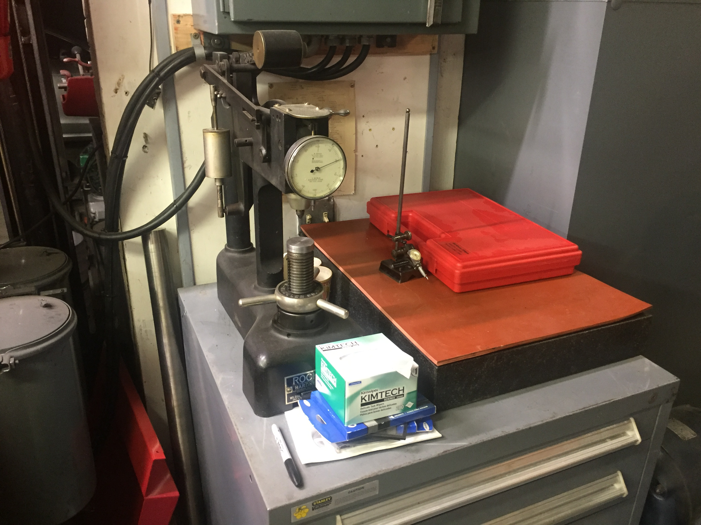

Our manual J-head Bridgeport
Our Machine Shop
Our manual J-head Bridgeport

A Standard Modern 13" 'Utilathe'

Our Sunnen honeing machine for honing engine blocks

Our CNC mill, a Hermle UWF1000, with Heidenhain TNC355 control. It is a bit old, but is far stiffer than many modern machines (Haas) and runs amazingly well. We had to make an enclosure ourselves, which is still a WIP.

A pretty neat mechanical chop saw for cutting stock.

Our Norton D-bit grinder that for making tools.

A Brown and Sharpe Surface Grinder

18" Grob Bandsaw

Our large drill press.

Perhaps the crown jewel, our SIP (Société d’Instruments de Précision, from Geneva, Switzerland) jig boring machine. A stunningly accurate and precise machine for the tightest of tolerances.

A bit of an inspection area, with a Rockwell hardness tester, surface plate, and a set of gage pins we havn't found a good place to store yet.